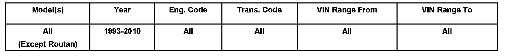

Interior - Cleaning Tips Fabrics, Vinyls And Plastics
70 08 04Oct. 7, 2008
2002407 Supersedes T.B group 70 number 08 01 due to duplicate group number.

Vehicle Information
Condition
Interior, Cleaning Tips for Fabrics, Vinyls and Plastics
Interior trim panels, seat upholstery, plastic trim or vinyl is dirty or soiled.
Technical Background
Information only.
Production Solution
No production change required.
Service
Tip:
For cleaning leather, see technical bulletin 2002345.
NOTE:
Always read and follow manufacturer Cautions and Warnings regarding use of product.
Always test product in an inconspicuous area prior to using in visible areas.
For vehicles with dirty or soiled interior components, use the following steps IN SEQUENCE to restore components to their original appearance.
1. Prepare a cleaning solution using All Purpose Cleaner Part No. ZVW177203 or equivalent and water (due to local tap water pH level it is best to use distilled water).
a. 1 part cleaner to 5 parts water for general cleaning.
b. 1 part cleaner to 2 parts water for spot removal of heavy grease stains etc.
2. Apply solution using a hand spray bottle (adjust nozzle to fine mist).
3. Using a clean soft non-pigmented cloth or sponge, gently agitate solution in small circular motions until soiled area is clean (a small soft bristle brush may be used for agitating cleaner solution into hard to reach areas).
NOTE:
DO NOT allow cleaner to dry on material.
1. Remove cleaner residue using a second spray bottle filled with clean water.
a. Spray cleaned area then dry with a clean soft non-pigmented cloth.
b. Carefully inspect cleaned area. Repeat procedure as necessary until clean.
NOTE:
If distilled water was not used for solutions and water marks / rings are visible after drying, this may be due to local tap water pH level. Repeat procedure using distilled water as necessary
Cleaning upholstery and / or trim IS NOT covered under the New Vehicle Warranty.
Warranty
Information only.
Required Parts and Tools
No special tools required.
Additional Information
All part and service references provided in this Technical Bulletin are subject to change and/or removal. Always check with your Parts Dept. and Repair Manuals for the latest information.